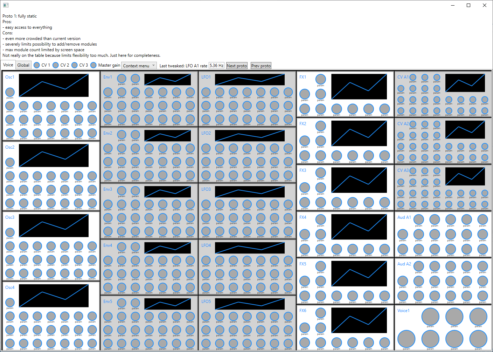
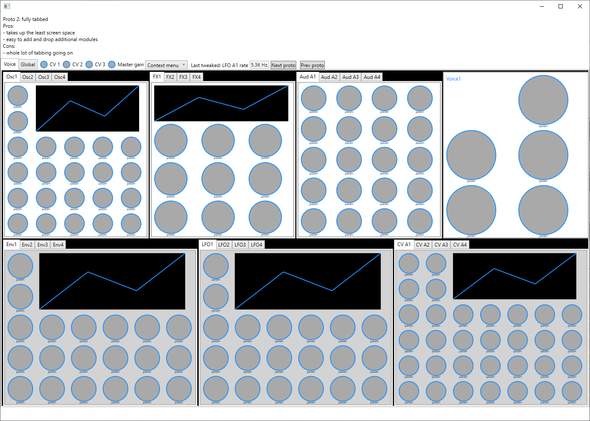
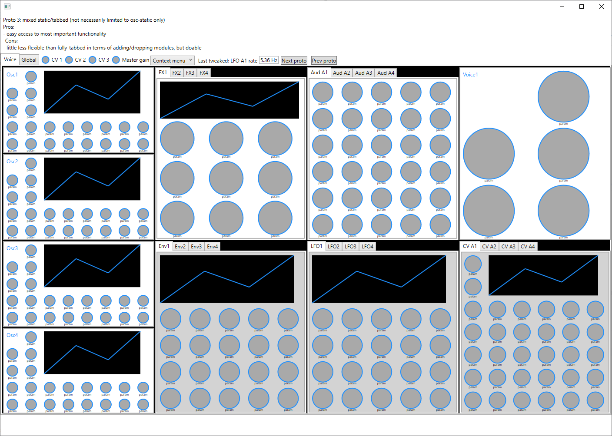
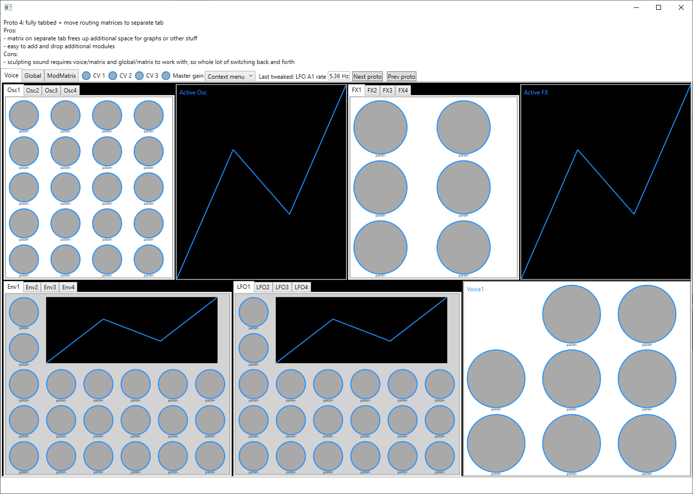
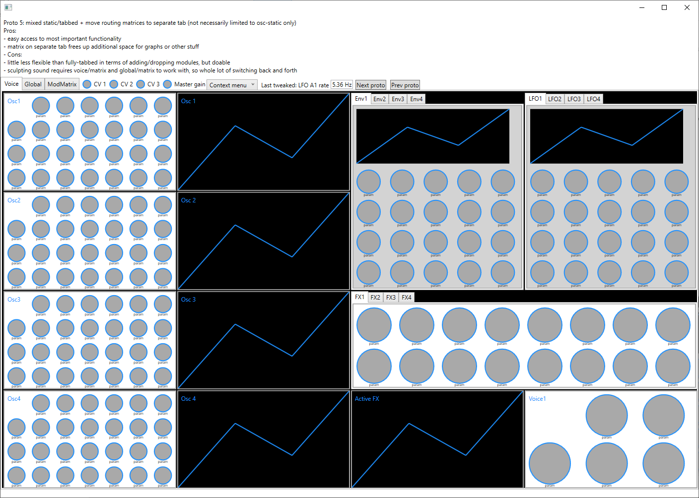

Some layout ideas for infernal synth
As it stands, the thing's got about 1600 automatable parameters.
Just some rough ideas about how to group them while not "hiding" stuff too much.
Here's some changes I want to do in any case:
- move knob labels to small-scale font below the knobs
- built-in way to access context menu as this appears to not work everywhere (studio one)
- move most important controls (given a finished patch) to the top (master gain, master cv controls)
- split voice/global to separate tabs (bonus points: this allows to completely drop voice tab for FX-only mode)
- drop text-edit for each knob, replace by single last-edited textbox + possibly right-click-knob for exact-editing
- switch to more opaque background, reduce the use of bg images, differentiate module types by background color (e.g. audio/cv)
Also some ideas about how to drop parameters altogether (always preferred, of course):
- Drop stuff that's of no use at all. Example: oscillator gain. Completely covered by audio a gain. It's only there in the current version because otherwise there'd be an empty cell.
- Merge stuff without giving up too much functionality. Example: merge envelope attack1/slope1/split/attack2/slope2 into attack/split-time/split-level/slope, on the assumption that everyone wants "smooth" envelopes.
- Merge comboboxes such as "osc/basic/sine, osc/basic/saw, osc/dsf, osc/noise" into "osc/basic-sine, osc/basic-saw, osc/dsf, osc/noise". Same goes for fx, "filter-comb, filter-state-var, delay-feedback, delay-multitap" etc.
Note, in each example below I have tried to get close to the actual knob-count for each module. So if it looks crowded in the prototype, it will look crowded in the actual version.
Option #0: as-is
Implement everything mentioned above except for separate tabs.
Pros:
- easy access to everything
Cons:
- doesnt free up enough screen space to comfortably operate knobs by mouse
Not really on the table, just here for completeness.
Option #1: static layout

Option #2: tabbed layout

Option #3: mixed static/tabbed layout

Option #4: tabbed layout + move matrix (cv a/b, audio a/b)

Option #5: mixed static/tabbed layout + move matrix (cv a/b, audio a/b)
